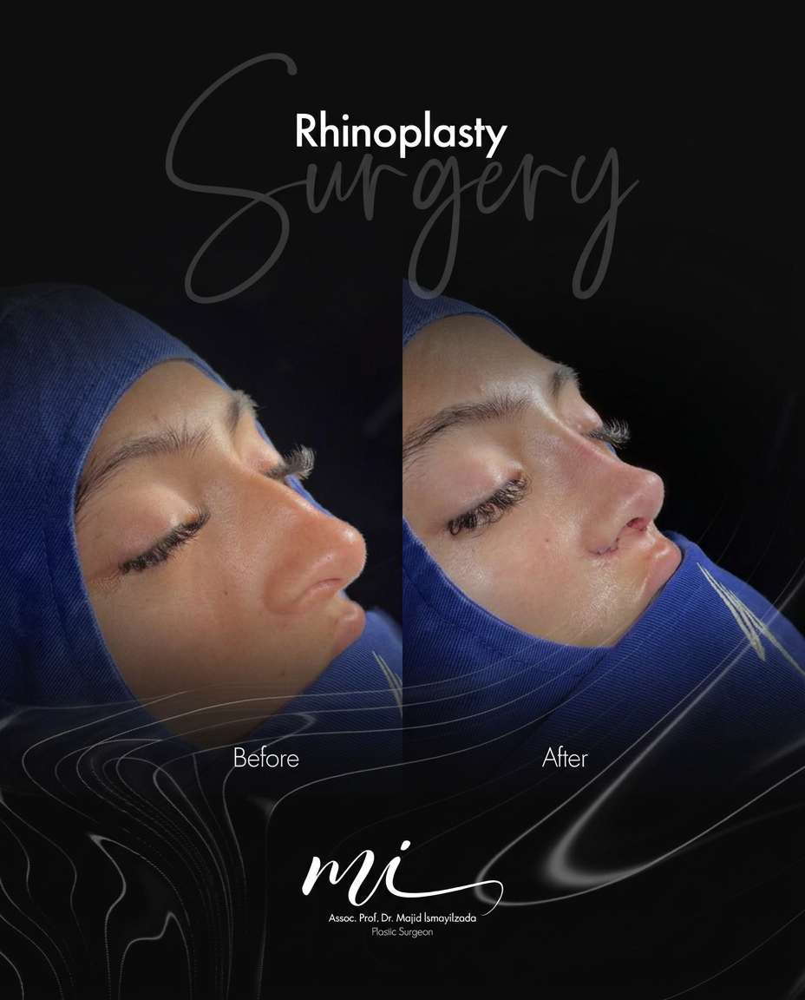
Ön Görüşme
Beklentilerinizi dinliyor, dijital simülasyon eşliğinde olası sonucu birlikte değerlendiriyoruz. Bu görüşmede aklınızdaki tüm sorulara açıkça yanıt veriyoruz.
Akademik deneyim ve kişiye özel planlamayla, hayal ettiğiniz sonuca şeffaf ve güvenli bir süreçle ulaşıyoruz.
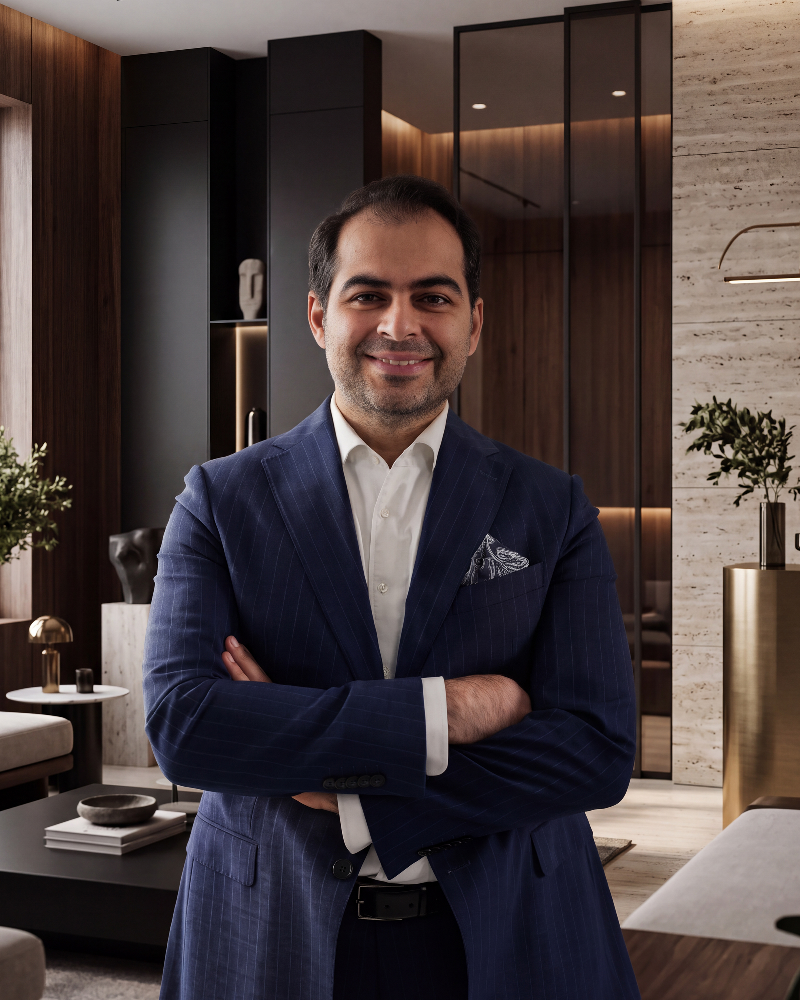
Plastik ve Estetik Cerrahi Uzmanı — Plastik, rekonstrüktif ve estetik cerrahi alanındaki uluslararası deneyim ve bilimsel çalışmalarımla, size özel doğru ve güvenilir çözümler sunuyorum.
✔ Kapsamlı değerlendirme ile size en uygun tedavi planını birlikte belirleyelim.
✔ Doğal, estetik ve kalıcı sonuçlara birlikte ulaşalım.
✔ Bilimsel yaklaşım ve tecrübemle estetik hedeflerinize güvenle ulaşın.
2015'te Ankara Üniversitesi Tıp Fakültesi'nden mezun oldu; Necmettin Erbakan Üniversitesi'nde Plastik Rekonstrüktif ve Estetik Cerrahi ihtisasını tamamladı. 2018 ve 2022'de kurultay birincilik ödülleri, 2024'te Plastik Cerrahi Bilim Sanat Ödülü kazandı. 2024'te Belçika'da meme rekonstrüksiyonu alanında fellowship yaptı, 2025'te Doçentlik unvanını aldı ve halen doktora eğitimine devam etmektedir.
Yüz, burun ve vücut estetiğinde, konsültasyondan iyileşme sürecine kadar bütünsel bir yaklaşım.
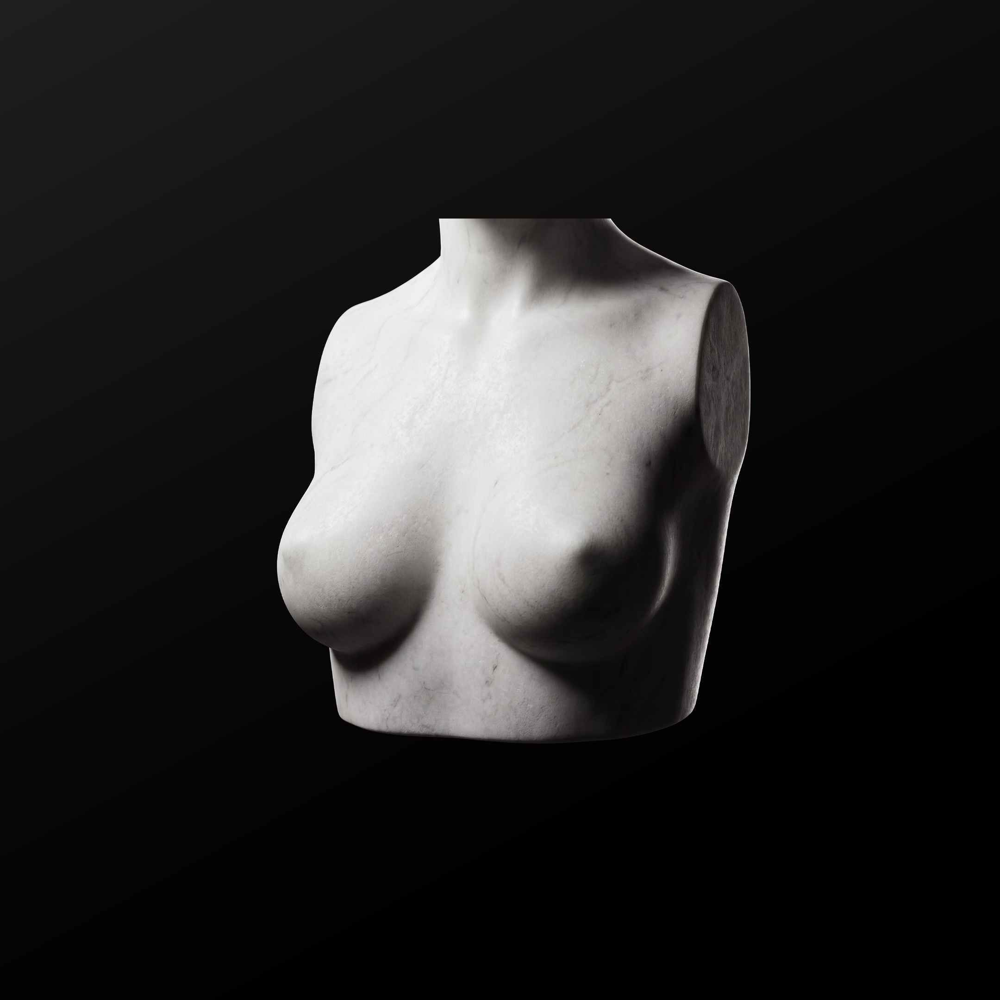
Hem sarkmış hem de hacim kaybına uğramış memelere aynı seansta yeniden form, dik görünüm ve dolgunluk kazandıran kombine estetik cerrahi işlemi.
Detaylı Bilgi →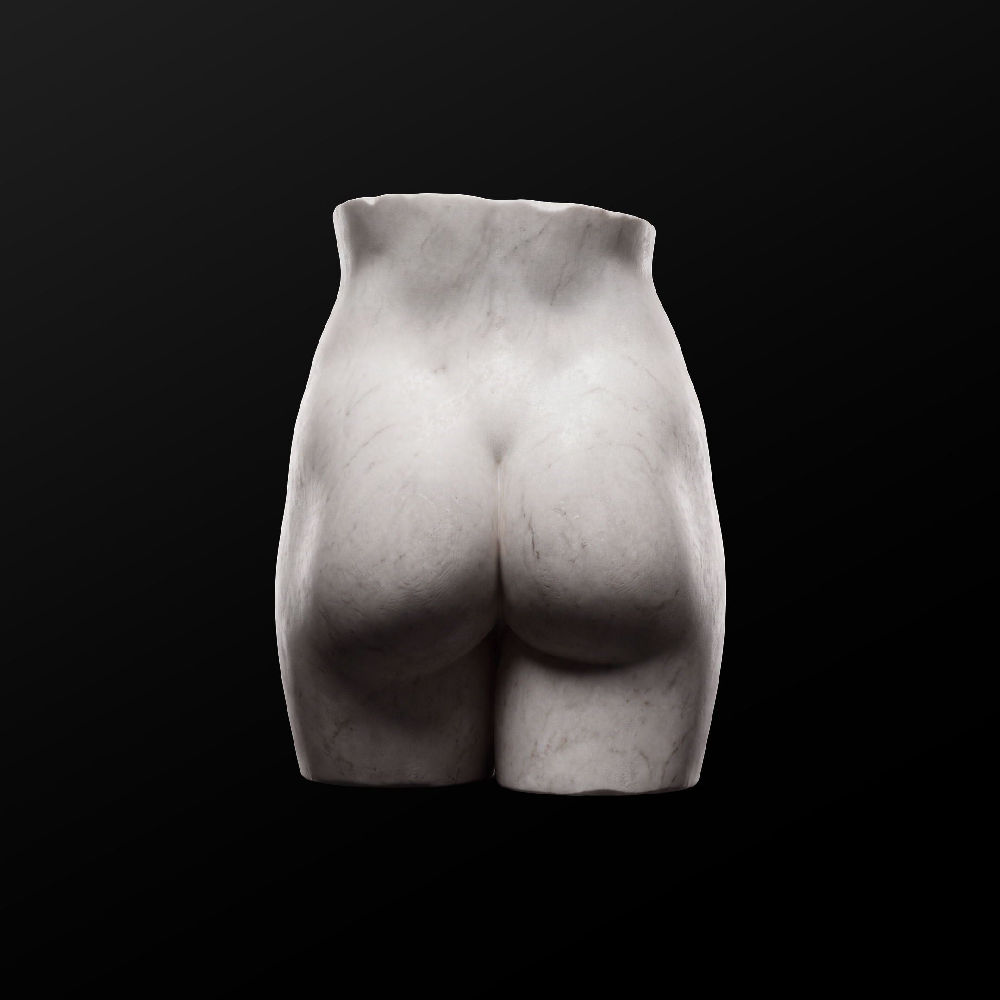
Yağ transferi yöntemiyle kalça ve bel bölgelerinin şekillendirildiği estetik cerrahi.
Detaylı Bilgi →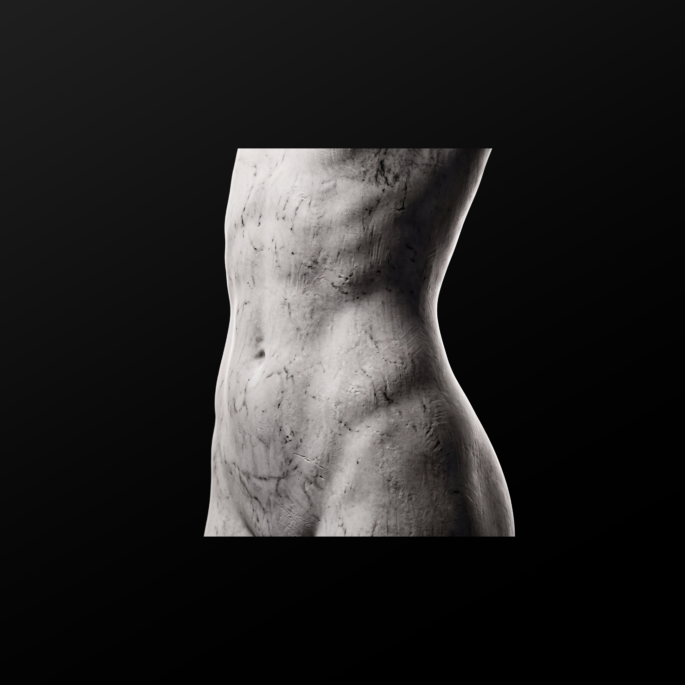
Diyet ve egzersizle giderilemeyen inatçı bölgesel yağ birikimlerini uzaklaştıran, vücudu yeniden şekillendiren estetik cerrahi.
Detaylı Bilgi →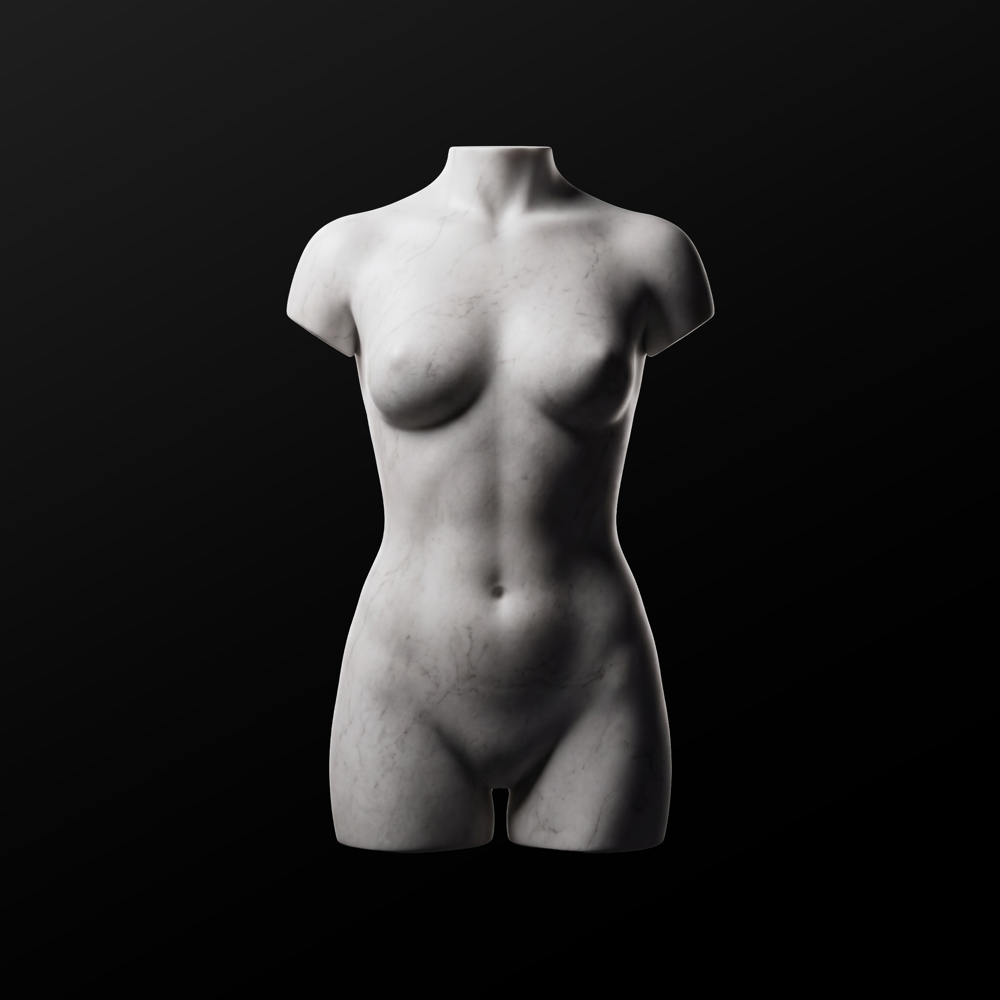
Doğum ve emzirme sürecinin ardından oluşan vücut değişimlerini tek bir cerrahi programda ele alan bütüncül estetik yaklaşım.
Detaylı Bilgi →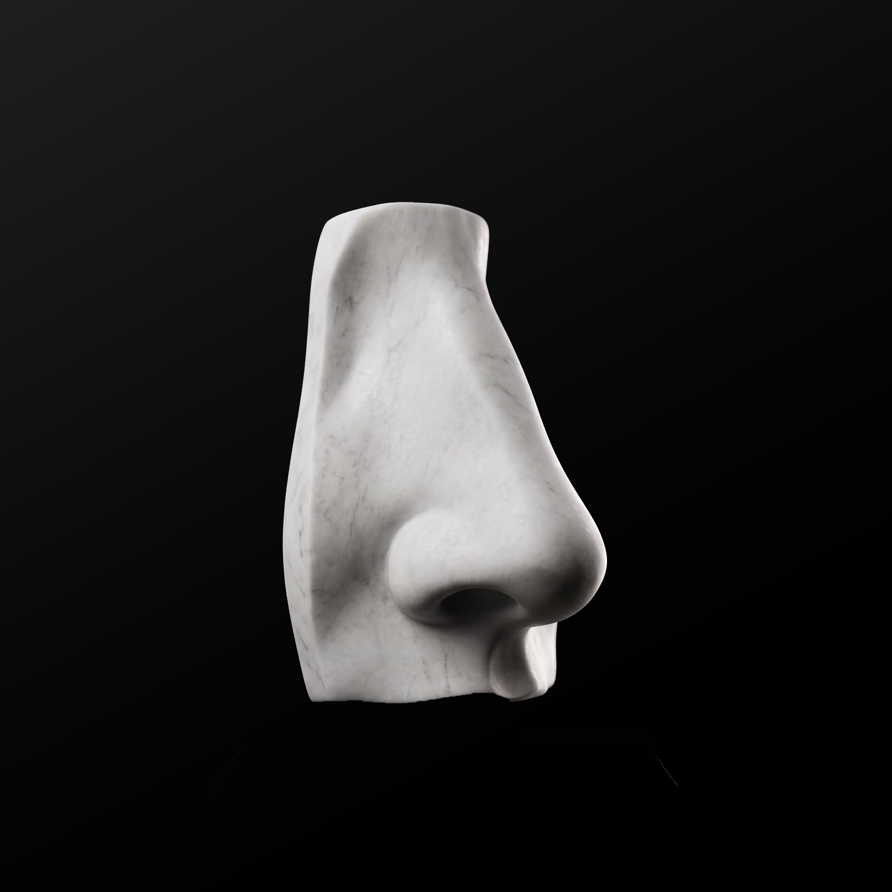
Burun sırtındaki kambur, ucundaki düşüklük veya aks eğriliğini düzelten; gerektiğinde nefes fonksiyonunu da iyileştiren, yüz dengesine özel planlanan estetik cerrahi.
Detaylı Bilgi →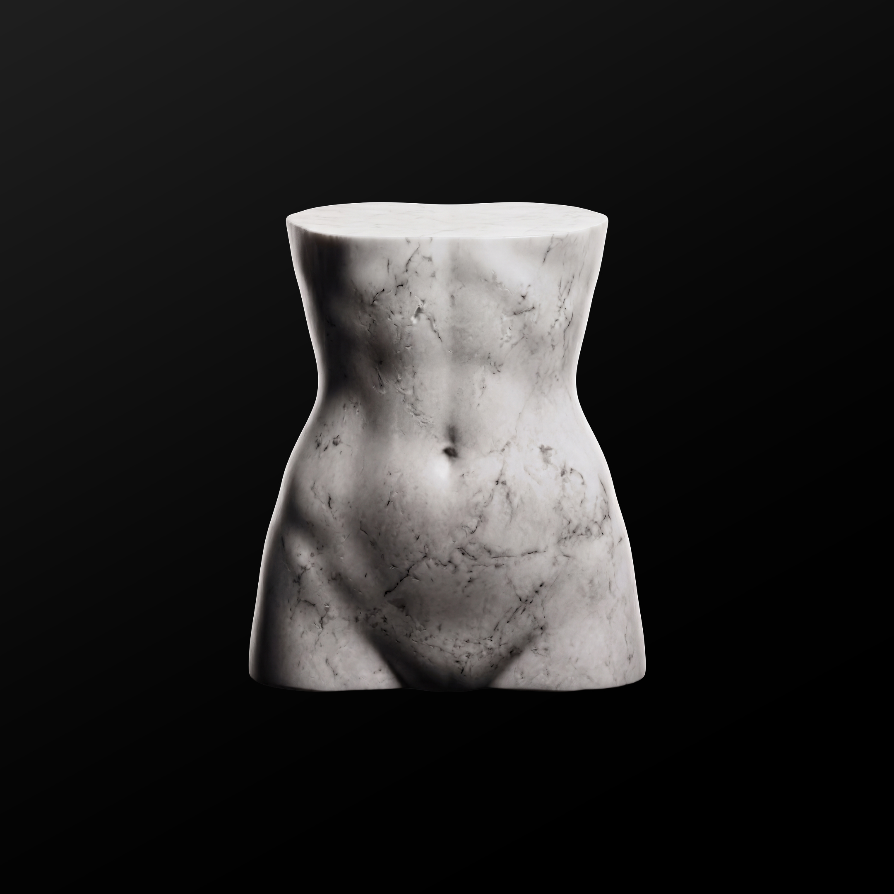
Doğum, kilo değişimleri veya yaşlanmayla gevşeyen karın bölgesini, fazla deri ve yağ dokusunun alınması ile ayrışmış kasların sıkılaştırılmasıyla yeniden şekillendiren kapsamlı bir estetik cerrahi yöntemi.
Detaylı Bilgi →Vakaları tek satırda kaydırarak dönüşümü keşfedin.
Kısa video paylaşımlarla deneyimlerini anlatan hastalarımız.
Hastalarımızın kendi deneyimlerinden ve sonuçlarından okuyun.
Yıllardır ertelediğim bir kararı, sabırlı ve dürüst anlatım sayesinde güvenle verdim.
Konsültasyondan iyileşmeye kadar her adımda kendimi bilgilendirilmiş hissettim.
Beklentilerimi çok iyi dinledi, abartıya kaçmayan bir sonuç önerdi.
Rekonstrüksiyon sürecinde hem tıbbi hem duygusal olarak yanımda hissettim kendisini.
Sorularımın hiçbirini yanıtsız bırakmadı, süreç boyunca güven verdi.
Güven ve öngörülebilirlik üzerine kurulu beş aşama.
Beklentilerinizi dinliyor, dijital simülasyon eşliğinde olası sonucu birlikte değerlendiriyoruz. Bu görüşmede aklınızdaki tüm sorulara açıkça yanıt veriyoruz.
Gerekli tetkikler tamamlanır, anestezi uzmanımız genel sağlık durumunuzu değerlendirir; operasyon tarihi ve cerrahi teknik netleşir.
Tam donanımlı ameliyathanede, deneyimli anestezi ve hemşirelik ekibi eşliğinde operasyonunuz gerçekleştirilir; süreç yakınlarınıza düzenli olarak bildirilir.
İlk 48 saat gözlem altında geçer. İlk hafta pansuman kontrolleri yapılır, 2–4 hafta içinde çoğu hasta günlük hayatına döner. 7/24 ulaşılabilir destek hattımız yanınızda.
Doku yerleşimi tamamlandığında nihai sonuç netleşir. Süreç boyunca planlanan kontrol muayeneleriyle iyileşmenizi birlikte takip ederiz.
Estetik cerrahi bir risk taşır; bunu gizlemek yerine sizinle açıkça konuşmayı tercih ediyoruz.
Operasyonun faydaları kadar olası riskleri de konsültasyonda detaylıca anlatılır.
Tüm operasyonlar uzman anestezi ekibi ve tam donanımlı yoğun bakım desteğiyle yürütülür.
Ameliyathanelerimiz uluslararası akreditasyon kriterlerine uygun olarak denetlenir.
Operasyon sonrası acil bir durumda doğrudan ekibimize ulaşabilirsiniz.
Operasyonlarımız, tam donanımlı ameliyathaneler ve 7/24 yoğun bakım desteğine sahip özel bir hastanede gerçekleştirilir. Uluslararası akreditasyon kriterlerine uygun hijyen protokolleri, sürecin her aşamasında titizlikle uygulanır.
Hasta konforu da tıbbi süreç kadar önemlidir: özel hasta odaları, deneyimli hemşirelik ekibi ve çok dilli uluslararası hasta birimi; hem yurt içinden hem yurt dışından gelen hastalarımız için sorunsuz bir deneyim sağlar.
Yurt dışından gelen hastalarımız için konaklamadan eve dönüşe kadar kapsamlı destek hizmetleri sunuyoruz.
İstanbul Havalimanı veya Sabiha Gökçen'den kliniğimize ve konaklama noktanıza özel araç transferi organize edilir. Uçuş bilgilerinizi paylaşmanız yeterlidir.
Klinik yakınında, iyileşme sürecine uygun otel ve konut seçenekleri arasından bütçenize en uygun olanı birlikte belirleriz. İyileşme döneminizde konfor önceliğimizdir.
İngilizce, Arapça, Rusça ve Azerice konuşan hasta koordinatörlerimiz; tüm sürecinizi sıfırdan organize eder ve her aşamada yanınızda olur.
Görüntülü görüşme ile operasyon öncesi detaylı değerlendirme yapılır. Tedavi planınız, beklentileriniz ve sorularınız uzaktan görüşülerek netleştirilir.
Taburculuk sonrası pansuman ve kontrol randevularınız planlanır. 7/24 ulaşılabilir destek hattımız ile sürecin her anında güvende olursunuz.
Ülkenize döndükten sonra görüntülü kontrol görüşmeleri ile iyileşmeniz uzaktan takip edilir. Gerekli durumlarda ek kontrol planlanır.
İki kıtayı birleştiren İstanbul; kolay ulaşım, konforlu konaklama ve iyileşme sürecinde huzur bulacağınız bir atmosfer sunar.
Onlarca ülkeden doğrudan uçuşlarla İstanbul Havalimanı'na kolayca ulaşılır; havalimanı-klinik transferi sizin için organize edilir.
Klinik yakınında, iyileşme sürecine uygun sessiz ve konforlu otel seçenekleriyle konaklama organizasyonu yapılır.
Ayasofya, Boğaz ve tarihi yarımada; iyileşme sürecinin dışında keşfedebileceğiniz zengin bir şehir deneyimi sunar.
Avrupa ve Amerika'daki aynı kalitedeki tedavilere kıyasla çok daha uygun maliyetli bir seçenek sunar.
Ulusal ve uluslararası akademik ve profesyonel kuruluşlarla sağlanan güvence.
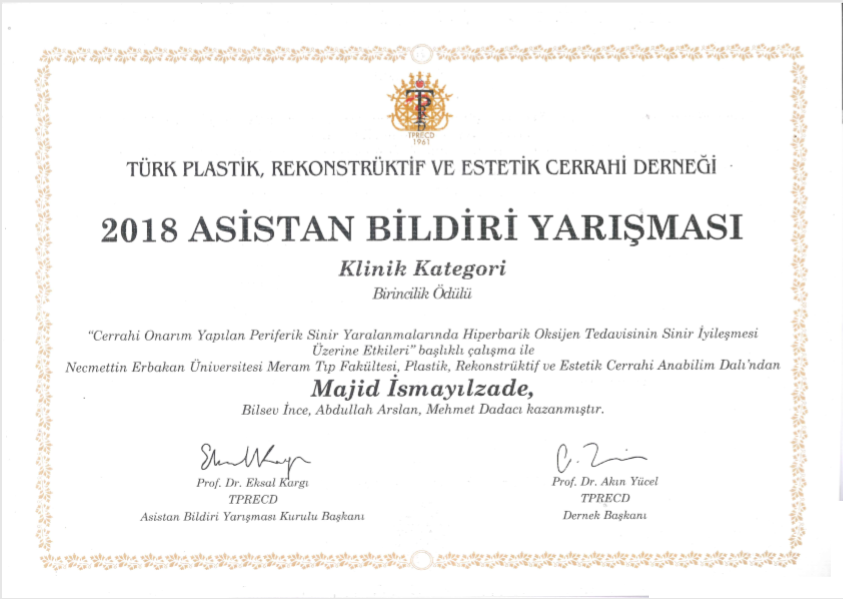
ÖdülTürk Plastik Rekonstrüktif ve Estetik Cerrahi Derneği'nin 40. ulusal kurultayında "Cerrahi Onarım Yapılan Periferik Sinir Yaralanmalarında Hiperbarik Oksijen Tedavisinin Sinir İyileşmesi Üzerine Etkileri" başlıklı çalışma, Asistan Bildiri Yarışması Klinik Dalında Birincilik Ödülü'ne değer görülmüştür.
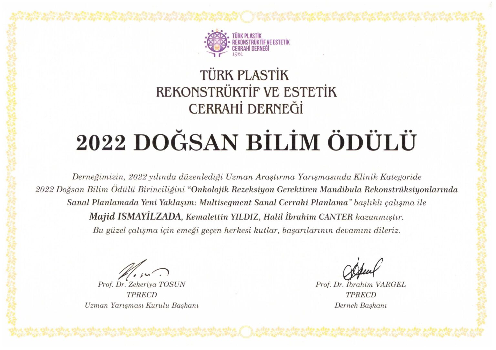
ÖdülTürk Plastik Rekonstrüktif ve Estetik Cerrahi Derneği'nin 44. ulusal kurultayında "Onkolojik Rezeksiyon Gerektiren Mandibula Rekonstrüksiyonlarında Sanal Planlamada Yeni Yaklaşım: Multisegment Sanal Cerrahi Planlama" başlıklı çalışma, Uzman Araştırma Yarışması Klinik Kategorisinde Birincilik Ödülü'ne değer görülmüştür.
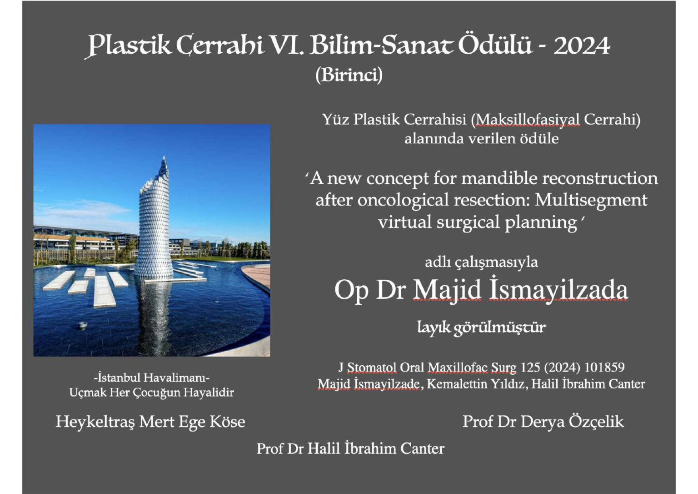
Ödül2024 yılı Plastik Cerrahi Bilim/Sanat Ödülü; Journal of Stomatology, Oral and Maxillofacial Surgery dergisinde yayınlanan "A new concept for mandible reconstruction after oncological resection: Multisegment virtual surgical planning" başlıklı çalışmaya verilmiştir.
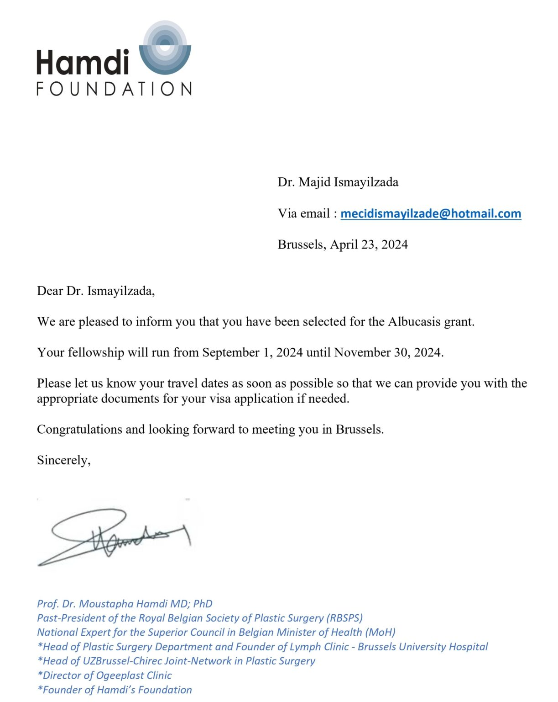
Ödül2024 yılı Meme Rekonstrüksiyonu alanında Brüksel'de fellowship için Hamdi Foundation tarafından Albucasis Grant ödülü verilmiştir.
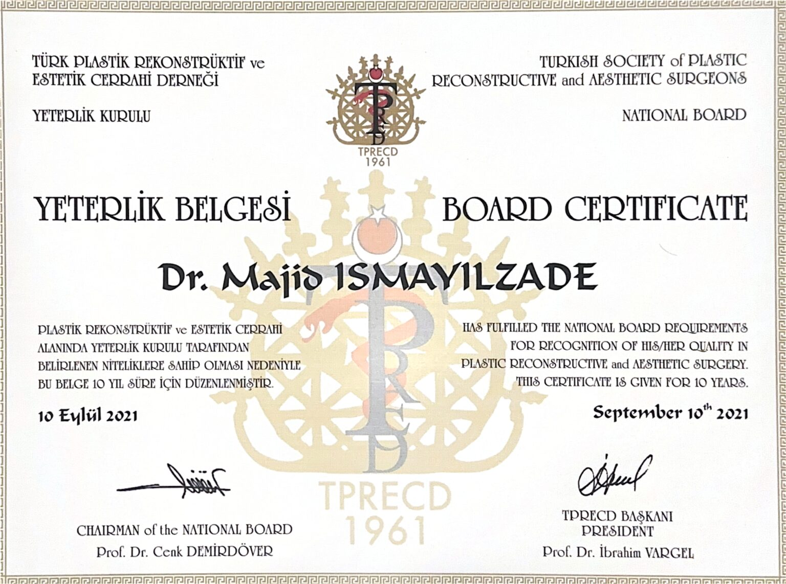
Sertifika2021 yılında Türk Plastik Rekonstrüktif ve Estetik Cerrahi Derneği Yeterlik Kurulu tarafından düzenlenen sınavda başarılı olunmuş ve yeterlik sertifikası ile belgelenmiştir.
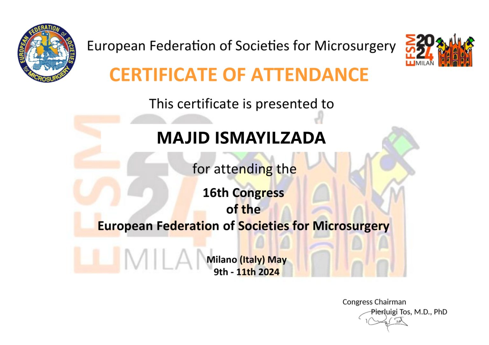
Sertifika16. Avrupa Mikrocerrahi Kongresi'ne katılım sertifikası.
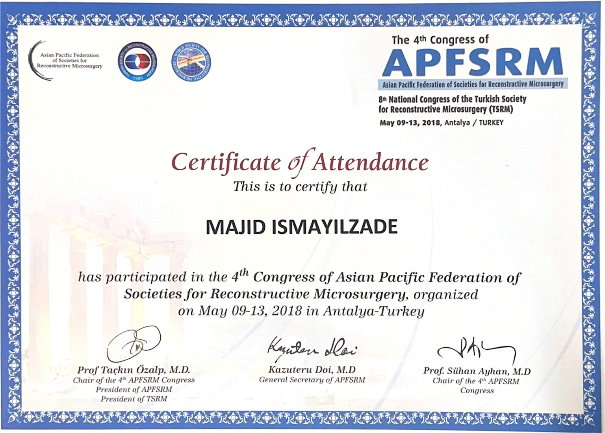
Sertifika4. Uluslararası APFSRM (Asia Pacific Federation of Societies of Reconstructive Microsurgery) kongresine katılım sertifikası.
Rinoplastiden meme rekonstrüksiyonuna, konsültasyondan iyileşmeye kadar bilgilendirici yazılar.
Operasyon, iyileşme ve süreci hakkında sık sorulan soruların yanıtları.
Operasyonun kapsamına ve hastanın genel sağlık durumuna göre, anestezi uzmanımızla birlikte karar netleştirilir.
Günlük hayata dönüş genellikle 7-14 gün, nihai sonuçların netleşmesi 6-12 ay arasında sürer.
Görüntülü ön konsültasyon, konaklama organizasyonu ve uzaktan takip dahil kapsamlı koordinasyon sunuyoruz.
Operasyon kapsamı ve hastane süreciyle birlikte kişiye özel belirlenir.
Genel örnekleri sitemizde bulabilirsiniz; kapsamlı galeri gizlilik nedeniyle konsültasyon sonrası paylaşılır.
Ücretsiz ön görüşme talebinizi bırakın, 24 saat içinde klinik koordinatörümüz sizinle iletişime geçsin.